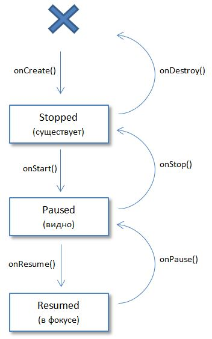
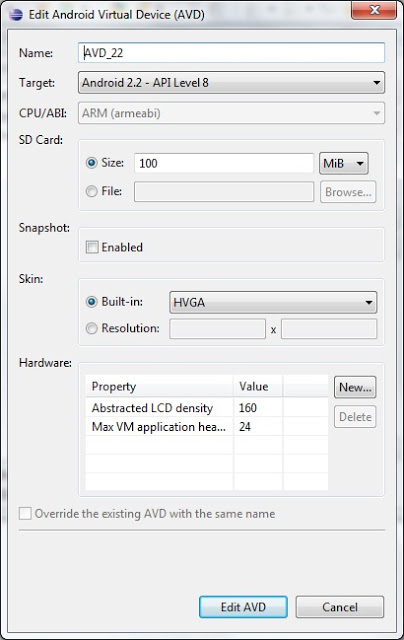
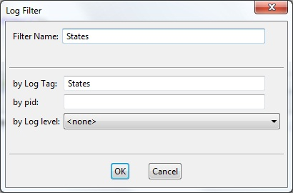

В этом уроке:
- Activity LifeCycle – поведение Activity при создании, вызове, закрытии
Теория
При работе приложения, мы создаем новые Activity и закрываем старые, сворачиваем приложение, снова открываем и т.д. Activity умеет обрабатывать все эти движения. Это необходимо, например, для освобождения ресурсов или сохранения данных. В документацие достаточно подробно это описано.
Созданное при работе приложения Activity может быть в одном из трех состояний:
Resumed - Activity видно на экране, оно находится в фокусе, пользователь может с ним взаимодействовать. Это состояние также иногда называют Running.
Paused - Activity не в фокусе, пользователь не может с ним взаимодействовать, но его видно (оно перекрыто другим Activity, которое занимает не весь экран или полупрозрачно).
Stopped - Activity не видно (полностью перекрывается другим Activity), соответственно оно не в фокусе и пользователь не может с ним взаимодействовать.
Когда Activity переходит из одного состояния в другое, система вызывает различные его методы, которые мы можем заполнять своим кодом. Схематично это можно изобразить так:

Для упрощения понимания я дал краткое описание состояний в скобках под названиями. А крестом обозначил отсутствие Activity.
Итак, мы имеем следующие методы Activity, которые вызывает система:
onCreate() – вызывается при первом создании Activity
onStart() – вызывается перед тем, как Activity будет видно пользователю
onResume() – вызывается перед тем как будет доступно для активности пользователя (взаимодействие)
onPause() – вызывается перед тем, как будет показано другое Activity
onStop() – вызывается когда Activity становится не видно пользователю
onDestroy() – вызывается перед тем, как Activity будет уничтожено
Т.е. эти методы НЕ вызывают смену состояния. Наоборот, смена состояния Activity является триггером, который вызывает эти методы. Тем самым нас уведомляют о смене, и мы можем реагировать соответственно. Посмотрим на практике, когда и в каком порядке вызываются эти методы.
Практика
В этом уроке нам надо будет эмулировать событие смены ориентации экрана.

Создадим проект:
Project name: P0231_OneActivityState
Build Target: Android 4.0
Application name: OneActivityState
Package name: ru.startandroid.develop.p0231oneactivitystate
Create Activity: MainActivity
Layout не меняем, нам он сейчас не важен. Открываем MainActivity.java, там как обычно код по умолчанию:
package ru.startandroid.develop.p0231oneactivitystate;
import android.app.Activity;
import android.os.Bundle;
public class MainActivity extends Activity {
/** Called when the activity is first created. */
@Override
public void onCreate(Bundle savedInstanceState) {
super.onCreate(savedInstanceState);
setContentView(R.layout.main);
}
}Мы видим, что реализован уже знакомый нам по схеме метод onCreate. Повторюсь, важно понимать, что этот метод НЕ создает Activity. Создание – это дело системы. Т.е. система сама создает Activity, а нам дает возможность немного поучаствовать и выполнить свой код в методе onCreate(). Мы этой возможностью пользуемся и говорим системе, что Activity должна отобразить экран из R.layout.main.
Добавим все остальные методы из схемы, и в каждый добавим запись в лог.
package ru.startandroid.develop.p0231oneactivitystate;
import android.app.Activity;
import android.os.Bundle;
import android.util.Log;
public class MainActivity extends Activity {
final String TAG = "States";
/** Called when the activity is first created. */
@Override
public void onCreate(Bundle savedInstanceState) {
super.onCreate(savedInstanceState);
setContentView(R.layout.main);
Log.d(TAG, "MainActivity: onCreate()");
}
@Override
protected void onStart() {
super.onStart();
Log.d(TAG, "MainActivity: onStart()");
}
@Override
protected void onResume() {
super.onResume();
Log.d(TAG, "MainActivity: onResume()");
}
@Override
protected void onPause() {
super.onPause();
Log.d(TAG, "MainActivity: onPause()");
}
@Override
protected void onStop() {
super.onStop();
Log.d(TAG, "MainActivity: onStop()");
}
@Override
protected void onDestroy() {
super.onDestroy();
Log.d(TAG, "MainActivity: onDestroy()");
}
}В каментах подсказали важное замечание! При реализации этих методов обязательно вызывайте соответствующие методы супер-класса и обязательно перед вашим кодом. См. код выше. Каждый метод содержит вызов метода супер-класса и свой код расположен после этих вызовов.
Теперь, когда методы будут вызываться, мы будем видеть это в логах. Настроим фильтр на тег «States», чтобы не искать свои сообщения в общей куче логов. Как это делается мы проходили в уроке 12

Все сохраним и запустим приложение. После того, как запустилось, смотрим лог:
MainActivity: onCreate()
MainActivity: onStart()
MainActivity: onResume()
Activity создалось, прошло два состояния (Stopped, Paused) и теперь находится в третьем состоянии - Resumed. Т.е. оно создалось (onCreate), отобразилось (onStart) и получило возможность взаимодействовать с пользователем (onResume).
Теперь нажмем кнопку Back на эмуляторе. Activity закрылось. Смотрим лог:
MainActivity: onPause()
MainActivity: onStop()
MainActivity: onDestroy()
Activity проделывает путь, обратный созданию. Сначала теряет фокус (onPause), затем исчезает с экрана (onStop), затем полностью уничтожается (onDestroy).
Смена ориентации экрана
Посмотрим, как ведет себя Activity, когда происходит смена ориентации экрана. Запустите снова приложение (либо найдите его в списке приложений в системе на эмуляторе, либо снова нажмите CTRL+F11 в Eclipse ). В логах снова отобразились три метода, вызванные при создании. Теперь в эмуляторе нажмите CTRL+F12, ориентация сменилась. Кажется, что ничего особенного не произошло, но смотрим логи и видим:
MainActivity: onPause()
MainActivity: onStop()
MainActivity: onDestroy()
MainActivity: onCreate()
MainActivity: onStart()
MainActivity: onResume()
Activity полностью уничтожается и снова создается. При этом обычно выполняются процедуры сохранения и восстановления данных, чтобы не потерялись данные, и приложение сохранило свой вид. Про то, как это делается, мы будем говорить в последующих уроках.
Также есть еще метод onRestart. Он вызывается перед методом onStart, если Activity не создается с нуля, а восстанавливается из состояния Stoped. Его мы рассмотрим в следующем уроке.
Обычно в учебниках эта тема дается по-другому. Но мне это шаблонное объяснение кажется недостаточно понятным, поэтому я написал свое. Как всегда, надеюсь, что у меня получилось раскрыть тему )
Советую вам после этого урока прочитать документацию, ссылку на который я дал в самом начале урока. Там все очень хорошо написано. И знания лучше усвоятся. Пока что, главное – это понять в какой момент, какой метод вызывается. А уже дальше мы будем разбираться, как это можно использовать и что там писать.